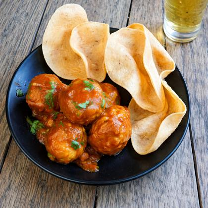

Meat Loaf Meatballs Recipe

Description
Savor the ultimate comfort food with these tender, glazed meatloaf meatballs. Slow-baked to perfection and
served with crispy chips, this recipe reimagines a classic family staple into bite-sized bursts of savory
flavor.
Ingredients
- 2 large eggs
- ⅔ cup milk
- 2 teaspoons salt
- ¼ teaspoon ground black pepper
- 3 slices bread, crumbled
- 1 ½ pounds ground beef
- 1 onion, chopped
- 1 cup shredded Cheddar cheese
- ½ cup shredded carrot
- ¼ cup brown sugar
- ¼ cup ketchup
- 1 tablespoon prepared yellow mustard
Steps
- Gather all ingredients and preheat the oven to 350°F (175°C).
- In a large bowl, combine the ground beef, crumbled bread, shredded cheese, carrots, and onion.
- In a separate small bowl, whisk together the eggs, milk, salt, and pepper; pour over the meat mixture and
mix well.
- Shape the mixture into small meatballs and place them on a prepared baking sheet.
- Stir the brown sugar, ketchup, and mustard together in a small bowl to create the glaze.
- Spoon the glaze over each meatball and bake for 25–30 minutes until cooked through and caramelized.
- Serve hot with a side of crispy chips.
← Home